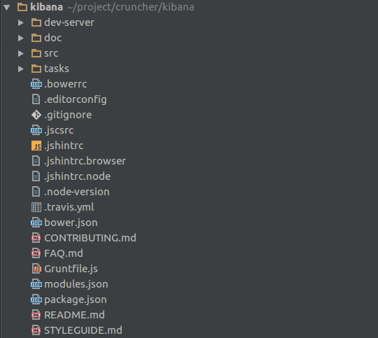
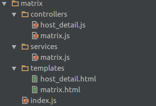

Kibana Develop Summary
俞洋洋 前端开发 
整体结构
dev-server
- app.js - Nodejs启动文件
- config.json - 配置项
- user.json - 伪造的用户信息
npm run dev
localhost:8005
其它
- doc - 文档
- src - 源码
- tasks - build辅助任务
- 其它
项目架构
npm + bower + requirejs + angularjs + less + grunt
- assets/public - web静态资源
- components - 公用组件
- directives - 公用指令
- factories/service - 公用服务
- filters - 公用过滤器
- images - kibana图片资源
- lib - 第三方依赖
- partials - 公用页面结构
- plugins - 业务功能模块
- registry - 模块组织
- styles - 页面样式
- ui - 公用ui组件
- utils
- vis-template - 快速建图模块
- dashboard.(html|js) - 入口
功能开发
- 添加业务代码
- 配置entry
- 配置菜单
添加业务代码
src/kibana/plugins

- controllers
- templates
- services
- filters
- index.js
配置entry/菜单
src/kibana/config
- plugins当中添加业务entry
- menus添加菜单配置(id表示url)
- 添加图表 src/kibana/plugins/vis_types/vislib/$chartName.js
- 注册图表 src/kibana/components/vis_types/index.js
- 添加handler src/kibana/components/vislib/lib/handler/handler_types.js
- 添加layout src/kibana/components/vislib/lib/layout/layout_types.js
- 添加画图逻辑 src/kibana/components/vislib/visualizations/$chartName.js
- 注册画图逻辑 src/kibana/components/vislib/visualizations/vis_types.js
- 图表配置 src/kibana/plugins/vis_types/vislib/editors/$chartName.html
savedDashboards
src/kibana/plugins/dashboard/services/saved_dashboards.js
- find() - 查询所有
- get(id) - 获取单个
- delete(id) - 删除
- savedSearches
- savedVisualizations